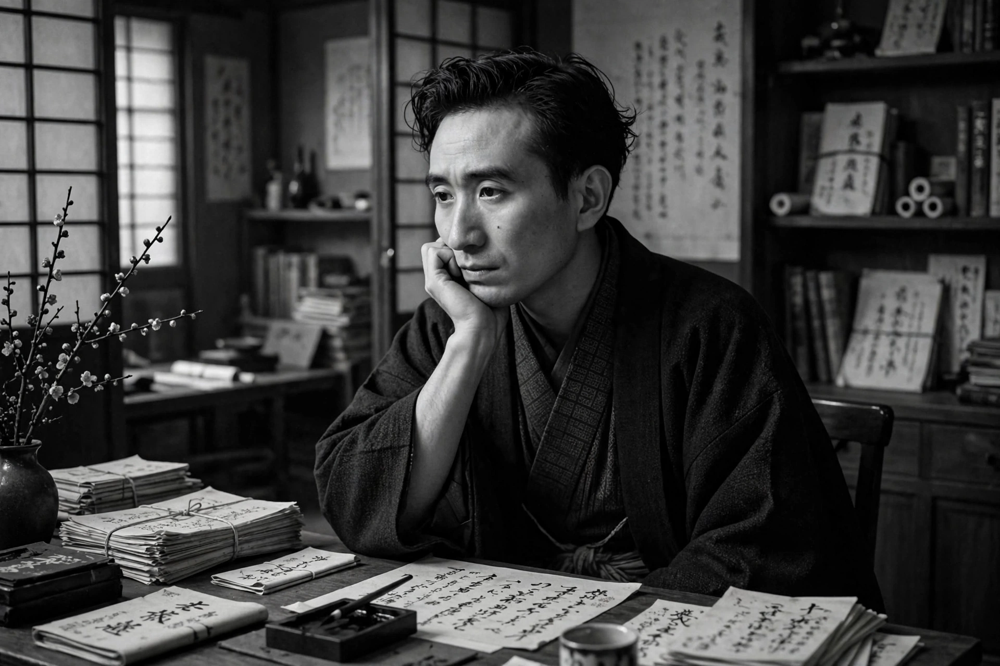

Osamu Dazai (1909–1948) was a Japanese novelist, one of the most celebrated and widely read authors in Japan. His semi-autobiographical works explore alienation, addiction, and the collapse of aristocratic and wartime certainties.
Born into a wealthy landowning family in Aomori, Dazai became involved with Marxist student movements, attempted suicide repeatedly, and struggled with morphine addiction. After the war he achieved fame with The Setting Sun (1947) and No Longer Human (1948). In June 1948 he died in a double suicide with Tomie Yamazaki in Tokyo's Tamagawa Canal.
No Longer Human — narrated by Yōzō Ōba — is Japan's second-best-selling novel. Short works such as Run, Melos! and Schoolgirl are staples of school curricula, and Dazai's persona continues to inspire manga, anime, and pilgrimages to his grave at Zenrin-ji, Mitaka.